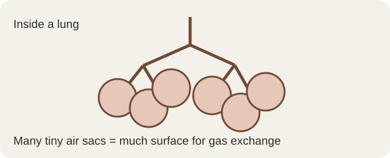
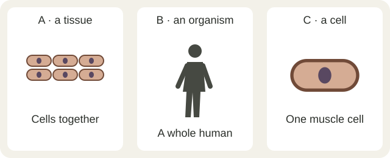
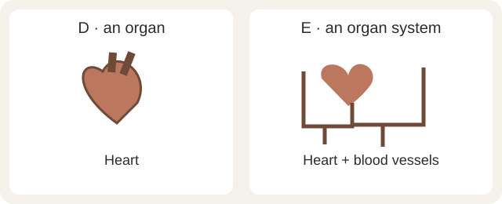
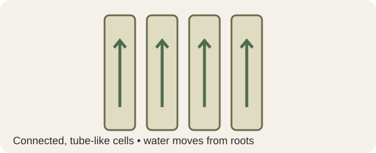
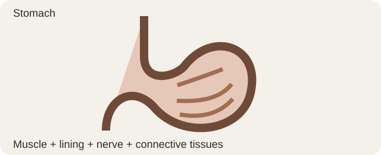
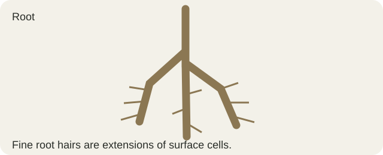

Lung

Life Science · September 29, 2026
How do specialized cells work together to build an organism?
Work independently. Test, notice, and use evidence. About 38 minutes.
Turn-in is not connected yet. You can work and save on this Chromebook. Keep this browser profile and tell Mr. Barker before closing your work.
01 · PREDICT + ORDER 5 min
How can many specialized cells work together to build an organism? Inspect these scrambled views. Then build a sequence from one cell to the whole living thing.


These are simplified models. They are not drawn at the same scale.
02 · PEEBEDU CELL BUILDER 11 min
A cardiomyocyte is one heart muscle cell. Its job is to contract repeatedly. Build its parts in Peebedu, then return here to explain two of your choices.
Keep this assignment tab open. Come back to “From Cells to Systems” after the build. No account or export is needed.
The app's long outline is a simplified muscle model; real heart cells branch and connect. Icons and counts represent cell parts—they are not true sizes or actual numbers. This model does not really contract or make ATP.
A heart muscle cell contracts over and over. It has many mitochondria that help release usable energy from food, ribosomes that build proteins, and a nucleus that holds DNA instructions. It also has a membrane and other cell structures.
Use those observations to complete the same questions below. Tell your teacher that you used the evidence card.
03 · MATCH THE LEVELS 7 min
Fill the three middle levels. The parts must belong together. Choose once in each box, then check and retry.
One heart muscle cell
↓
A whole human
A heart contains several tissue types, including muscle, nervous, connective, and lining tissues.
One photosynthetic leaf cell
↓
A whole sunflower plant
A leaf contains several tissue types: protective, ground, and transport tissues.
A tissue is cells working together. An organ is several tissues working together. An organ system is several organs working together.
04 · STRUCTURE / FUNCTION DETECTIVE 8 min
For each case, identify the level. Then choose a feature-and-job pair supported by the picture.



05 · CHECKPOINT 4 min
Trace three delivery routes. Our body cells need nutrients and oxygen, and their wastes must be removed.
Digestive system → blood → cells
Respiratory system → blood → cells
Cells → blood → lungs / kidneys
Next lesson: how these processes help keep internal conditions stable—homeostasis.
06 · APPLY + EXIT 3 min

A root contains protective, ground, and transport tissues. Fine root hairs are extensions of some surface cells; they increase the surface touching moist soil.
Ready? Review any empty answers, then use the Turn In section below. Your short explanations matter more than finishing Peebedu perfectly.
Instructional source: Houghton Mifflin Harcourt, Life Science Unit 2, Lesson 4, “Levels of Cellular Organization,” printed pages 118–129; Lesson 5, “Homeostasis and Cell Processes,” pages 132–143, used only for the brief cells' needs bridge. Lesson 6, “Classification of Living Things,” pages 148–163, was reviewed for future context; taxonomy is outside today's investigation.
Primary benchmark: SC.6.L.14.1. Today practices cell → organism; atoms → molecules are prior knowledge, so this single lesson does not cover the full benchmark.
Peebedu Cell Builder and activity description · Current Mission 8, Cardiomyocyte, checked September 29, 2026. Peebedu remains on its own site. All diagrams on this page are original simplified teaching models. They do not reproduce HMH figures or Peebedu's simulation.
WRAP / TURN IN